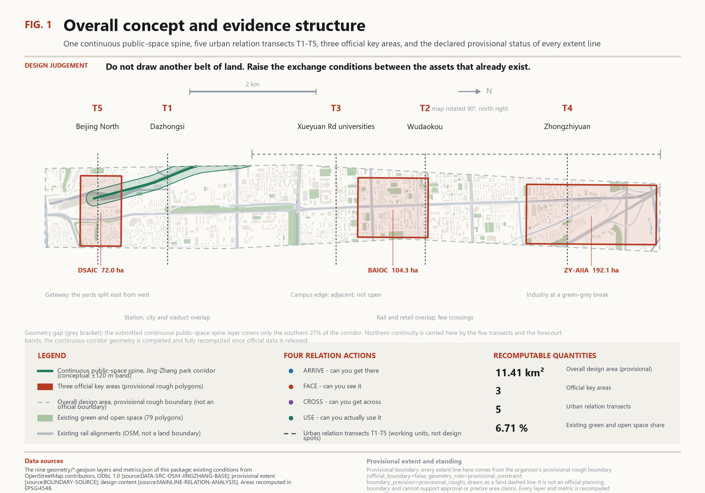
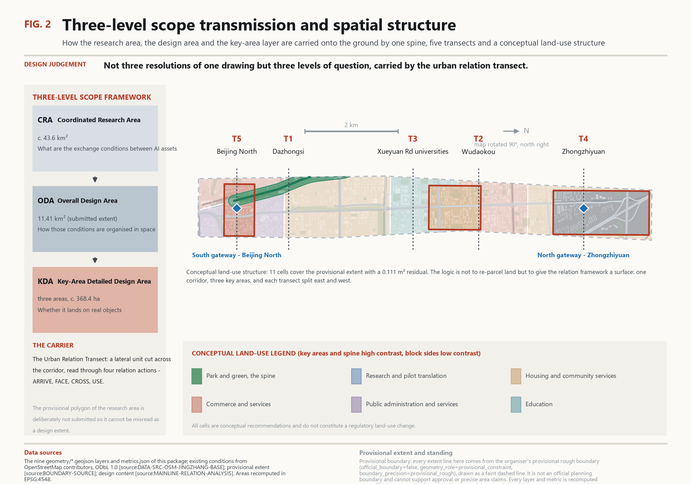
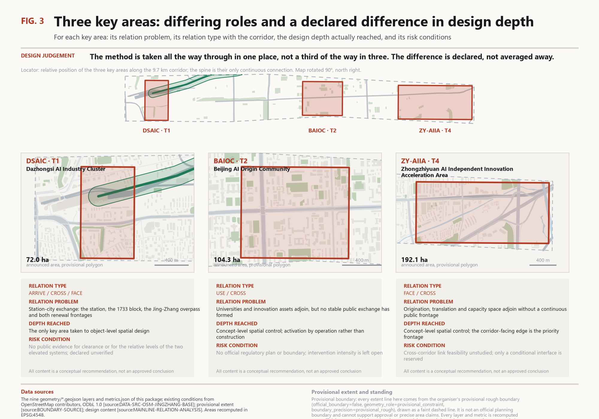
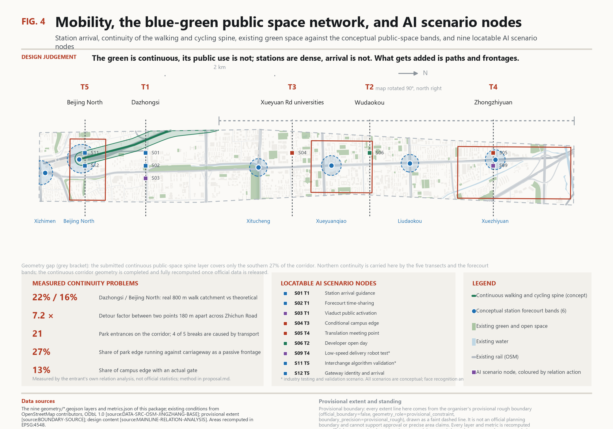

Jing-Zhang Relation Belt
Answering the AI Innovation Belt by reorganising urban relations
The Jing-Zhang park is built; the urban relations around it are not. This proposal uses the urban relation transect as its working unit and four relation actions - ARRIVE, FACE, CROSS, USE - to reorganise how the systems along the corridor relate to it, with one reach, Dazhongsi, taken through to spatial verification.
01Overview map
One continuous public-space spine, five urban relation transects and three official key areas along a 9.7 km corridor. The map is derived programmatically from this package's geometry.

The spine
The continuous public space of the Jing-Zhang park carries the CROSS and USE relation actions; the conceptual control band is ±120 m.
The transects
T1-T5 are five different relation situations, not five design spots; they are the unit that carries the three scope levels.
The key areas
The three official key areas sit on T1, T2 and T4. This proposal reaches a different design depth in each and says so.
02Three-level scope
The coordinated research area, the overall design area and the key-area layer are three levels of question, not three resolutions of one drawing.
CRA · Coordinated Research Area
c. 43.6 km²
What are the exchange conditions between AI assets
ODA · Overall Design Area
11.41 km²
How those conditions are organised in space
KDA · Key-Area Detailed Design Area
three areas, c. 368.4 ha
Whether it lands on real objects

| Transect | Location | Relation situation | Diagnosed relation problem |
|---|---|---|---|
| T5 | Beijing North | Southern gateway | Yards split east from west; no arrival node yet |
| T1 | Dazhongsi | Station, city and viaduct overlap | Several problems overlap here; the one transect taken to design depth |
| T3 | Xueyuan Road universities | Campus edge | Adjacency, physical access and institutional openness are not the same thing |
| T2 | Wudaokou | Rail and retail overlap | Too few crossings and nowhere to stop |
| T4 | Zhongzhiyuan | Industry at a green-grey break | Origination, translation and capacity adjoin without a public exchange frontage |
03Key areas
The relation problem of each official key area, the design depth actually reached, and each area's risk condition.

Beijing AI Origin Community
USECROSS
T2 · 104.3 ha (announced area; the polygon in this package is a provisional rough boundary)
Concept-level spatial control: housing and community services as the leading use, activation by operation rather than large-scale construction, everyday services and arrival restored, and places to stop organised at the existing crossings.
Risk condition：With no official regulatory plan or boundary, intervention intensity is left open.
Dazhongsi AI Industry Cluster
ARRIVECROSSFACE
T1 · 72.0 ha (announced area; the polygon in this package is a provisional rough boundary)
The only key area taken to object-level spatial design. The converged design question: using the existing Jing-Zhang overpass and Dazhongsi station as the frame, reorganise arrival, level change, frontage and lateral public space between the 1733 block, exits A and B, the station, the corridor and both renewal frontages.
Risk condition：There is no public evidence for the relative levels of the Jing-Zhang overpass and the Line 13 viaduct. This is declared unverified; no clearance, ramp or underpass geometry is assumed.
Zhongzhiyuan AI Independent Innovation Acceleration Area
FACECROSS
T4 · 192.1 ha (announced area; the polygon in this package is a provisional rough boundary)
Concept-level spatial control: research and pilot translation as the leading use, the corridor-facing edge as the priority public frontage, and a conditional interface reserved for a crossing at the green-grey break.
Risk condition：The feasibility of the crossing at the green-grey break has not been studied; the degree of intervention depends on that study.
04Land-use zoning
land_use.geojson is a conceptual land-use structure covering the provisional extent. Its logic is to give the relation framework a surface, not to re-parcel land.
| ID | Cell | Transect / side | Code | Area (m²) |
|---|---|---|---|---|
| LU-001 | 京张遗址公园活力带·公园绿地 | ALL · corridor | 1401 | 463,890 |
| LU-002 | 众智园AI自主创新加速区·科研用地 | T4 · key area | 0802 | 1,929,202 |
| LU-003 | 北京AI原点社区·居住用地 | T2 · key area | 07 | 1,043,237 |
| LU-004 | 大钟寺AI产业聚集区·商业服务业用地 | T1 · key area | 09 | 589,288 |
| LU-005 | 北京北站段西侧·商业服务业用地 | T5 · west side | 09 | 529,834 |
| LU-006 | 北京北站段东侧·公共管理与公共服务用地 | T5 · east side | 08 | 925,813 |
| LU-007 | 大钟寺段西侧·商业服务业用地 | T1 · west side | 09 | 5,955 |
| LU-008 | 大钟寺段东侧·城镇住宅用地 | T1 · east side | 0701 | 2,752,149 |
| LU-009 | 学院路高校段东侧·教育用地 | T3 · east side | 0804 | 1,112,643 |
| LU-010 | 五道口段东侧·商业服务业用地 | T2 · east side | 09 | 1,144,983 |
| LU-011 | 众智园段东侧·城镇住宅用地 | T4 · east side | 0701 | 915,832 |
05Mobility, walking and cycling
The real walking catchment of the stations is far below the theoretical one: the problem is not station density but the continuity of guidance between station and city.

06Blue-green public space
Ecological continuity is not the same as continuity of public use. The point is not to add more green but to turn the existing ecological frame into public space that can be entered, reached and used.
79 existing OSM features, recomputed in EPSG:4548.
Seven conceptual bands: the ±120 m corridor and six station forecourts. Not built public space.
| ID | Public-space control band | Relation action | Area (m²) |
|---|---|---|---|
| PUBLIC-001 | 京张遗址公园连续公共空间骨架（廊道 ±120m 概念控制带） | ARRIVE / CROSS / USE | 463,890 |
| PUBLIC-002 | 西直门站前到达与集散公共空间（概念控制带） | ARRIVE / CROSS / USE | 86,476 |
| PUBLIC-003 | 西土城站前到达与集散公共空间（概念控制带） | ARRIVE / CROSS / USE | 80,296 |
| PUBLIC-004 | 六道口站前到达与集散公共空间（概念控制带） | ARRIVE / CROSS / USE | 80,296 |
| PUBLIC-005 | 北京北站前到达与集散公共空间（概念控制带） | ARRIVE / CROSS / USE | 129,391 |
| PUBLIC-006 | 学院桥站前到达与集散公共空间（概念控制带） | ARRIVE / CROSS / USE | 101,624 |
| PUBLIC-007 | 学知园站前到达与集散公共空间（概念控制带） | ARRIVE / CROSS / USE | 101,624 |
07Buildings
Existing building footprints come from OpenStreetMap with the osmid kept on every feature. They are used to read existing form only, never as evidence of tenure, area or a demolish-renovate-retain decision.
All features of buildings.geojson, recomputed in EPSG:4548.
Extracted from OSM; completeness not field-verified.
The official regulatory FAR is not published; no design-model number is substituted for a statutory control.
Official height control is not published; this proposal sets no character zones or building-form rules.
Tenure and acquisition policy are non-public data; this package draws no demolish-renovate-retain conclusion.
08Renewal projects
The renewal list is organised by relation action rather than by parcel: twelve items, each with its relation action, mode of intervention and evidence status.
| No. | Project | Transect | Relation action | Mode of intervention | Evidence status |
|---|---|---|---|---|---|
| P01 | Continuous arrival band at Dazhongsi forecourt | T1 | ARRIVE | Direct design | verified |
| P02 | Reconstructing the 1733 frontage towards the corridor | T1 | FACE | Planning control | to be verified (renewal window) |
| P03 | Public organisation of the North 3rd Ring viaduct zone | T1 | CROSS | Direct design | to be verified (engineering conditions) |
| P04 | Exit A/B dispersal pockets and longitudinal movement | T1 | ARRIVECROSS | Direct design | verified |
| P05 | Everyday service top-up in the AI Origin Community | T2 | USE | Management and operation | verified |
| P06 | Places to stop at the existing Wudaokou crossings | T2 | CROSSUSE | Direct design | to be verified |
| P07 | Conditional controlled exchange edge along Xueyuan Road | T3 | FACECROSS | Planning control and operation | to be verified (each institution's access rules) |
| P08 | Zhongzhiyuan corridor-facing public frontage | T4 | FACE | Planning control | to be verified |
| P09 | Conditional interface reserved at the green-grey break | T4 | CROSS | Planning control | unknown (depends on a feasibility study) |
| P10 | Arrival organisation at the Beijing North gateway | T5 | ARRIVECROSS | Direct design and planning control | to be verified |
| P11 | Denser park entrances and removal of passive frontages | 全线 | ARRIVEUSE | Direct design | verified |
| P12 | A scenario access catalogue and its operating rules | 全线 | USE | Management and operation | conceptual |
一期：京张遗址公园公共空间连续化与到达关系修复
以廊道与三处重点区的到达界面为先，恢复 ARRIVE 与 USE 两类关系动作。
概念性时序建议·不构成开发时序、投资或审批安排
二期：三处重点区域界面与穿越关系补强
以三处官方重点区域为单元，补强 FACE 与 CROSS 两类关系动作。
概念性时序建议·不构成开发时序、投资或审批安排
三期：断面段城市街区更新与日常服务补足
在五个断面段的街区侧逐步补足日常服务、公共界面与慢行连接。
概念性时序建议·不构成开发时序、投资或审批安排
09AI scenarios
Twelve scenario cards, all grown from existing spatial relations without new building complexes; three of them are industry testing and validation scenarios.
| No. | Scenario | Location | Relation action | Status |
|---|---|---|---|---|
| S01 | Station arrival guidance | T1 Dazhongsi | ARRIVE | concept |
| S02 | Forecourt threshold time-sharing | T1 station forecourt | ARRIVEUSE | concept |
| S03 | Viaduct zone public activation | T1 North 3rd Ring overpass | CROSS | conditional |
| S04 | Conditional opening of the campus edge | T3 Xueyuan Road | FACECROSS | conditional |
| S05 | Translation interface meeting point | T4 Zhongzhiyuan | FACEUSE | concept |
| S06 | Developer open day | T2 AI Origin Community | USE | concept |
| S07 | Everyday service wayfinding | Rail-severed housing to public space | ARRIVEUSE | concept |
| S08 | Heritage narrative interpretation | Nodes along the whole corridor | USE | concept |
| S09 | Low-speed delivery and service robot testing industry test | T4 internal streets and corridor | CROSSUSE | conditional |
| S10 | Public-space environmental sensing validation industry test | Corridor pilot reach | USE | conditional |
| S11 | Station interchange algorithm validation industry test | T1 and T5 interchange reaches | ARRIVE | conditional |
| S12 | Gateway identity and arrival organisation | T5 both sides of Beijing North | ARRIVECROSS | concept |
10Core metrics
Every known metric is recomputed programmatically from this package's geometry in EPSG:4548. Unknown metrics are shown as text and a reason only.

Recomputed from the SITE-001 polygon of site_boundary.geojson; the extent is a provisional rough boundary and confidence is low.
Sum of green_space areas ÷ site_area_sqm.
Sum of public_space areas ÷ site_area_sqm. This is the share of conceptual control bands, not a statistic of built public space.
11Task coverage
compliance_matrix.json covers the 17 mandatory items of announcement clauses 1.3, 1.4 and 1.5 plus agent.1 to agent.6 of the agent taskbook: 23 items in all.
| Requirement | Title | Supporting sections | Layers and metrics |
|---|---|---|---|
| 1.3.1 | 构建世界级AI创新生态体系 | 三层范围工作框架; 统筹研究范围产业与未来城市研究; 总体设计范围城市更新与控规深度城市设计; 重点区域详细设计 | site_boundary, key_areas, land_use, roads, green_space, public_space, phasing site_area_sqm, green_ratio, public_space_ratio, key_area_count |
| 1.3.2 | 建设适配AI新质生产力的新型城市形态 | 三层范围工作框架; 统筹研究范围产业与未来城市研究; 总体设计范围城市更新与控规深度城市设计; 重点区域详细设计 | site_boundary, key_areas, land_use, roads, green_space, public_space, phasing site_area_sqm, green_ratio, public_space_ratio, key_area_count |
| 1.3.3 | 打造全球AI创新人才向往的高品质城区 | 三层范围工作框架; 统筹研究范围产业与未来城市研究; 总体设计范围城市更新与控规深度城市设计; 重点区域详细设计 | site_boundary, key_areas, land_use, roads, green_space, public_space, phasing site_area_sqm, green_ratio, public_space_ratio, key_area_count |
| 1.4.1 | 统筹研究范围 | 三层范围工作框架; 统筹研究范围产业与未来城市研究; 总体设计范围城市更新与控规深度城市设计; 重点区域详细设计 | site_boundary, key_areas, land_use, roads, green_space, public_space, phasing site_area_sqm, green_ratio, public_space_ratio, key_area_count |
| 1.4.2 | 总体设计范围 | 三层范围工作框架; 统筹研究范围产业与未来城市研究; 总体设计范围城市更新与控规深度城市设计; 重点区域详细设计 | site_boundary, key_areas, land_use, roads, green_space, public_space, phasing site_area_sqm, green_ratio, public_space_ratio, key_area_count |
| 1.4.3 | 重点区域范围 | 三层范围工作框架; 统筹研究范围产业与未来城市研究; 总体设计范围城市更新与控规深度城市设计; 重点区域详细设计 | site_boundary, key_areas, land_use, roads, green_space, public_space, phasing site_area_sqm, green_ratio, public_space_ratio, key_area_count |
| 1.5.1.1 | 统筹研究范围：AI创新生态体系 | 三层范围工作框架; 统筹研究范围产业与未来城市研究; 总体设计范围城市更新与控规深度城市设计; 重点区域详细设计 | site_boundary, key_areas, land_use, roads, green_space, public_space, phasing site_area_sqm, green_ratio, public_space_ratio, key_area_count |
| 1.5.1.2 | 统筹研究范围：适配人工智能的未来城市形态 | 三层范围工作框架; 统筹研究范围产业与未来城市研究; 总体设计范围城市更新与控规深度城市设计; 重点区域详细设计 | site_boundary, key_areas, land_use, roads, green_space, public_space, phasing site_area_sqm, green_ratio, public_space_ratio, key_area_count |
| 1.5.2.1 | 总体设计范围：产业目标与功能布局 | 三层范围工作框架; 统筹研究范围产业与未来城市研究; 总体设计范围城市更新与控规深度城市设计; 重点区域详细设计 | site_boundary, key_areas, land_use, roads, green_space, public_space, phasing site_area_sqm, green_ratio, public_space_ratio, key_area_count |
| 1.5.2.2 | 总体设计范围：城市更新总体框架 | 三层范围工作框架; 统筹研究范围产业与未来城市研究; 总体设计范围城市更新与控规深度城市设计; 重点区域详细设计 | site_boundary, key_areas, land_use, roads, green_space, public_space, phasing site_area_sqm, green_ratio, public_space_ratio, key_area_count |
| 1.5.2.3 | 总体设计范围：交通轨道市政配套设施 | 三层范围工作框架; 统筹研究范围产业与未来城市研究; 总体设计范围城市更新与控规深度城市设计; 重点区域详细设计 | site_boundary, key_areas, land_use, roads, green_space, public_space, phasing site_area_sqm, green_ratio, public_space_ratio, key_area_count |
| 1.5.2.4 | 总体设计范围：京张遗址公园活力带 | 三层范围工作框架; 统筹研究范围产业与未来城市研究; 总体设计范围城市更新与控规深度城市设计; 重点区域详细设计 | site_boundary, key_areas, land_use, roads, green_space, public_space, phasing site_area_sqm, green_ratio, public_space_ratio, key_area_count |
| 1.5.2.5 | 总体设计范围：城市风貌 | 三层范围工作框架; 统筹研究范围产业与未来城市研究; 总体设计范围城市更新与控规深度城市设计; 重点区域详细设计 | site_boundary, key_areas, land_use, roads, green_space, public_space, phasing site_area_sqm, green_ratio, public_space_ratio, key_area_count |
| 1.5.3.required | 重点区域范围详细设计必选项 | 三层范围工作框架; 统筹研究范围产业与未来城市研究; 总体设计范围城市更新与控规深度城市设计; 重点区域详细设计 | site_boundary, key_areas, land_use, roads, green_space, public_space, phasing site_area_sqm, green_ratio, public_space_ratio, key_area_count |
| 1.5.3.1 | 众智园AI自主创新加速区 | 三层范围工作框架; 统筹研究范围产业与未来城市研究; 总体设计范围城市更新与控规深度城市设计; 重点区域详细设计 | site_boundary, key_areas, land_use, roads, green_space, public_space, phasing site_area_sqm, green_ratio, public_space_ratio, key_area_count |
| 1.5.3.2 | 北京AI原点社区 | 三层范围工作框架; 统筹研究范围产业与未来城市研究; 总体设计范围城市更新与控规深度城市设计; 重点区域详细设计 | site_boundary, key_areas, land_use, roads, green_space, public_space, phasing site_area_sqm, green_ratio, public_space_ratio, key_area_count |
| 1.5.3.3 | 大钟寺AI产业聚集区 | 三层范围工作框架; 统筹研究范围产业与未来城市研究; 总体设计范围城市更新与控规深度城市设计; 重点区域详细设计 | site_boundary, key_areas, land_use, roads, green_space, public_space, phasing site_area_sqm, green_ratio, public_space_ratio, key_area_count |
| agent.1 | 一带总体概念与功能统筹方案设计 | 三层范围工作框架; 统筹研究范围产业与未来城市研究; 总体设计范围城市更新与控规深度城市设计; 重点区域详细设计 | site_boundary, key_areas, land_use, roads, green_space, public_space, phasing site_area_sqm, green_ratio, public_space_ratio, key_area_count |
| agent.2 | AI全栈自主创新体系与世界级AI创新生态设计 | 三层范围工作框架; 统筹研究范围产业与未来城市研究; 总体设计范围城市更新与控规深度城市设计; 重点区域详细设计 | site_boundary, key_areas, land_use, roads, green_space, public_space, phasing site_area_sqm, green_ratio, public_space_ratio, key_area_count |
| agent.3 | AI+场景赋能新范式与智能化AI活力城市设计 | 三层范围工作框架; 统筹研究范围产业与未来城市研究; 总体设计范围城市更新与控规深度城市设计; 重点区域详细设计 | site_boundary, key_areas, land_use, roads, green_space, public_space, phasing site_area_sqm, green_ratio, public_space_ratio, key_area_count |
| agent.4 | AI公共空间、智能原生新业态与朝圣地标设计 | 三层范围工作框架; 统筹研究范围产业与未来城市研究; 总体设计范围城市更新与控规深度城市设计; 重点区域详细设计 | site_boundary, key_areas, land_use, roads, green_space, public_space, phasing site_area_sqm, green_ratio, public_space_ratio, key_area_count |
| agent.5 | 百年京张文化、中关村文化与AI新文化融合叙事设计 | 三层范围工作框架; 统筹研究范围产业与未来城市研究; 总体设计范围城市更新与控规深度城市设计; 重点区域详细设计 | site_boundary, key_areas, land_use, roads, green_space, public_space, phasing site_area_sqm, green_ratio, public_space_ratio, key_area_count |
| agent.6 | 一带全球AI创新活动体系与长期运营设计 | 三层范围工作框架; 统筹研究范围产业与未来城市研究; 总体设计范围城市更新与控规深度城市设计; 重点区域详细设计 | site_boundary, key_areas, land_use, roads, green_space, public_space, phasing site_area_sqm, green_ratio, public_space_ratio, key_area_count |
Professional standards
standard_matrix.json covers 6 mandatory standards; each entry records its supporting sections, drawings, layers, metrics, sources, assumptions and self-check items.
PROJECT-OFFICIAL-ANNOUNCEMENT, PROJECT-AGENT-OPEN-CALL-TASKBOOK, MOHURD-URBAN-DESIGN-MEASURES, MOHURD-CONTROL-DETAILED-PLANNING, MNR-LAND-USE-CLASSIFICATION-GUIDE, MOHURD-ARCH-DESIGN-DEPTH-2016
Design depth
design_depth_matrix.json covers 15 core depth items, all complete; items limited by missing official data disclose this through completeness_limited_by.
12Self-check status
Before submission this package must pass the four local gates and participant_preflight. The authoritative record is the re-readable self_check.json in this package, not this page.
deterministic validation
validate_submission.py
structure, schema, manifest hashes, bilingual contract, non-empty drawings, PNG decode budget
trusted spatial review
spatial_review.py
boundary trust, key-area topology and non-overlap, land-use coverage, metric recomputability
visual packaging check
visual_review.py
offline safety, required content markers, three core metrics consistent with metrics.json
professional evidence review
professional_review.py
evidence citations, coverage of the three matrices, design-depth completeness
Organiser data gap (does not block content scoring)
The official planning boundary, the exact key-area polygons, regulatory parcel controls, road boundaries and utility conditions were not public at the time of submission. Every spatial conclusion here rests on the provisional rough boundary and is a low-confidence design-model value; all of it must be recomputed in full once official data is released.
Geometry gap declared by this package
The submitted continuous public-space spine (PUBLIC-001 and the conceptual walking and cycling corridor) currently covers only the southern reach. Northern continuity is carried by the five transects and the forecourt bands; the continuous corridor geometry is completed and recomputed once official data is released. The gap is marked on this page and on figures 1 and 4 and is not claimed as finished work.
13Sources
Every source actually used is recorded in this package's sources.json and graded by permitted use: usable for formal, background only, or provisional only.
| Source ID | Location or URL | Type and licence | Use and limitation | Retrieved |
|---|---|---|---|---|
| SITE-PACKAGE | brief/site-package/ | official_public usable_for_formal=yes | 任务书、枚举、允许设计空间、范围与 schema。 | 2026-08-31 |
| SOURCE-REGISTRY | data/source_registry.json | repository_public_registry usable_for_formal=yes | 公开/清权/临时资料可用性登记表，用于区分 formal 可用与背景资料。 | 2026-08-31 |
| PROCESSED-FACT-PACK | data/processed/agent_fact_pack.md | repository_processed_reference usable_for_formal=background_only | 范围、任务、资料用途与缺口的导航层，不是新的权威来源。 | 2026-08-31 |
| OFFICIAL-ANNOUNCEMENT | https://ghzrzyw.beijing.gov.cn/zhengwuxinxi/tzgg/hd/202605/t20260509_4643047.html | official_public usable_for_formal=yes | 公告 1.3/1.4/1.5 任务、三层范围、三处重点区域与成果要求。 | 2026-08-31 |
| AGENT-TASKBOOK | brief/site-package/agent_taskbook.json | user_provided_cleared usable_for_formal=yes | 面向智能体的十条共创原则、agent.1–agent.6 必答任务、评审维度与统一边界条款。 | 2026-08-31 |
| BOUNDARY-SOURCE | brief/site-package/geometry/provisional_boundaries.geojson | agent_inferred_from_public_data usable_for_formal=provisional_only | 本包 site_boundary 的唯一几何来源（临时粗略边界）。 不得作为 official redline、审批依据或精确面积复算依据。 | 2026-08-31 |
| KEY-AREA-SOURCE | brief/site-package/geometry/provisional_boundaries.geojson | agent_inferred_from_public_data usable_for_formal=provisional_only | 三处重点详细设计区域的临时粗略 polygon。 面积与边界均为粗略值，官方附件发布后须复算。 | 2026-08-31 |
| DATA-SRC-OSM-JINGZHANG-BASE | https://www.openstreetmap.org/ | osm ODbL 1.0 usable_for_formal=background_only | 本包 buildings / roads / green_space / constraints 的现状底层，以及主线关系分析的空间底图；已按 osmid 逐要素登记。 第三方开放地图，不作为道路红线、用地边界、产权或法定控制线依据。 | 2026-08-24 |
| MAINLINE-RELATION-ANALYSIS | 02_Output/方案工作区/68D_FINAL_PLANNING_BOARD_BATCH_v1/ | user_provided_cleared usable_for_formal=yes | 本方案自有的城市关系断面分析、五断面问题定义、四类关系机制与 T1 深化成果；为本投稿正文与图纸的设计内容来源。 参赛方自有分析成果，非政府审定结论。 | 2026-08-31 |
| B14-COMMONS-IMAGERY | https://commons.wikimedia.org/ | user_provided_cleared CC BY-SA 4.0 usable_for_formal=background_only | T1 现场观察页的三张现场影像（大钟寺站 A 口 2025-02、B 口、站外）。 仅用于现场情境说明，不作为空间量测或边界依据；再使用须保留署名与同协议共享。 | 2026-08-31 |
| CASE-KENDALL-SQUARE | https://kendallsquare.org/ | user_provided_cleared usable_for_formal=background_only | agent.2 全球案例：高校边界作为可穿越街区界面、实验室首层向城市开放。 国际案例为借鉴性背景资料，只用于提取一条可转化机制；不作为本项目空间控制、规模、投资或产值依据，也不代表已证明产业链运行机制。 | 2026-08-31 |
| CASE-STATION-F | https://stationf.co/about | user_provided_cleared usable_for_formal=background_only | agent.2 全球案例：1927 年货运站（2012 年列入历史建筑）改造，2017 年开放，单一大跨既有工业建筑内形成孵化—服务—展示连续动线。 国际案例为借鉴性背景资料，只用于提取一条可转化机制；不作为本项目空间控制、规模、投资或产值依据，也不代表已证明产业链运行机制。 | 2026-08-31 |
| CASE-KINGS-CROSS | https://www.kingscross.co.uk/about-the-development | user_provided_cleared usable_for_formal=background_only | agent.2 全球案例：约 27 公顷废弃铁路用地转型，10 处公共广场与 20 条街道先行、开发跟随。交叉核验：https://casestudies.uli.org/kings-cross/（ULI 案例研究）。 国际案例为借鉴性背景资料，只用于提取一条可转化机制；不作为本项目空间控制、规模、投资或产值依据，也不代表已证明产业链运行机制。 | 2026-08-31 |
| CASE-22AT-BARCELONA | https://en.wikipedia.org/wiki/22@ | user_provided_cleared usable_for_formal=background_only | agent.2 全球案例：2000 年批准，约 200 公顷产业更新完全承载在既有 Cerdà 网格上，不新划园区边界。交叉核验：https://www.mdpi.com/2413-8851/4/2/16（Urban Science 同行评议论文）。 国际案例为借鉴性背景资料，只用于提取一条可转化机制；不作为本项目空间控制、规模、投资或产值依据，也不代表已证明产业链运行机制。 | 2026-08-31 |
| CASE-MARS-TORONTO | https://www.marsdd.com/about/ | user_provided_cleared usable_for_formal=background_only | agent.2 全球案例：2005 年开放，紧邻多伦多大学与 University Health Network，把公共资助研究的转化作为独立空间类型。 国际案例为借鉴性背景资料，只用于提取一条可转化机制；不作为本项目空间控制、规模、投资或产值依据，也不代表已证明产业链运行机制。 | 2026-08-31 |
| CASE-SEOUL-AI-HUB | https://english.seoul.go.kr/seoul-policy-archive/seoul-ai-hub/ | official_public usable_for_formal=background_only | agent.2 全球案例：2024 年 5 月主体设施启用，以既有办公建筑改造承载 AI 企业与人才服务，避免新建。 国际案例为借鉴性背景资料，只用于提取一条可转化机制；不作为本项目空间控制、规模、投资或产值依据，也不代表已证明产业链运行机制。 | 2026-08-31 |
14Assumptions
Every assumption, its status and its effect on the conclusions are recorded in assumptions.json and cited item by item in the text and drawings.
| Assumption ID | Status | Statement | Effect on conclusions |
|---|---|---|---|
| A-CONTROLS-001 | pending_professional_confirmation | 控规地块控制线与指标、道路红线、轨道线位与控制保护区、文物保护范围、生态控制线/蓝线/绿线、市政管线廊道等法定控制条件，截至提交时均未公开，必须在官方附件发布后由专业团队确认。 | 容积率、建筑高度、拆改留、工程线位与市政容量在本包中一律保持 unknown，不以设计模型值替代法定结论。 |
| A-CONSTRAINT-GAP-001 | declared_data_gap | geometry/constraints.geojson 不含任何法定管控几何。其中要素仅为 OpenStreetMap 提取的现状识别对象：轨道线位（运营 69 条、停用 8 条，另有 5 条已拆除线位降级为 analysis_helper 不作现状事实）与水体面 8 个。轨道线位不是铁路用地边界，也不是安全保护区法定范围。 | 本层的空缺是组织方数据缺口的真实反映，不得被读作已核查无约束；已拆除线位不得被读作现状轨道。 |
| A-BOUNDARY-PROVISIONAL-001 | provisional_data | site_boundary 与 key_areas 使用组织方提供的 provisional_rough 临时粗略边界，official_boundary=false。 | site_area_sqm、green_ratio、public_space_ratio 等全部面积与比例均为低置信度设计模型值；官方红线发布后须整体复算。 |
| A-OSM-BASE-001 | third_party_open_data | 现状建筑、道路、绿地、轨道与水体来自 OpenStreetMap（ODbL），覆盖完整性与更新时点未经实测核校。 | 现状类指标为背景值，不作为产权、面积、红线或法定控制依据。 |
| A-LANDUSE-CONCEPT-001 | conceptual_proposal | land_use.geojson 是覆盖临时边界的概念性用地结构建议，由京张廊道、三处重点区域与五个城市关系断面的分带逻辑生成。 | 用地代码为概念判断，不构成法定用地调整结论，也不对应具体地块。 |
| A-PUBLIC-SPACE-CONCEPT-001 | conceptual_proposal | public_space.geojson 的廊道 ±120m 控制带与站前 160–260m 到达空间为概念性控制带，用于表达公共空间骨架的量级关系。 | public_space_ratio 是概念控制带占比，不是已建成公共空间统计值。 |
| A-PHASING-CONCEPT-001 | conceptual_proposal | phasing.geojson 的三期为按关系动作优先级排列的概念时序建议。 | 不构成开发时序、投资安排或审批时间表。 |
| A-TENURE-001 | not_public_data | 土地权属、房屋性质、企业入驻与征收政策均非公开数据。 | 本包不作任何拆改留、产权或招商结论。 |
| A-VERTICAL-GEOMETRY-001 | unverified | 京张跨北三环公共空间与 13 号线高架两套立体系统的相对高程无公开证据。 | T1 断面明确标注该项为未核实，不预设桥下净空、坡道或地下通道几何。 |
| A-AGENT-TASK-CONCEPT-001 | conceptual_proposal | agent.1–agent.6 的命名、Logo 方向、生态案例转化机制、场景卡、用户画像、朝圣地标、文化叙事与年度活动体系，均为概念层建议。 | 不构成政府承诺、企业落位、投资安排、已批准活动或已确定运营主体。 |